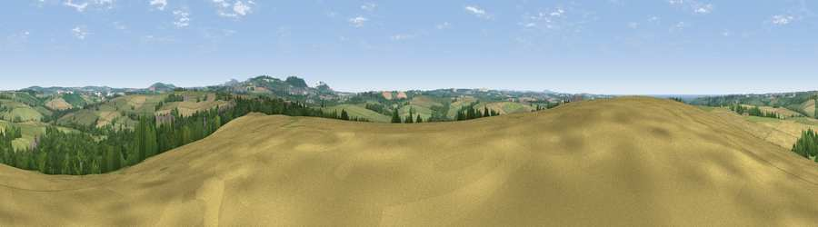

Viewpoint near Kestle Mill
#11647 in England · top 24% of its area beats it · near Kestle Mill · access?Where it is
The exact computed spot (SW 88175 60025). Click the marker for map links.
Public access: no public right of way or access land is recorded at this exact spot — it may be on private land. Computed from Natural England's CRoW access layer and OpenStreetMap rights of way — not the legal definitive map. Always verify locally.
The view, rendered

A 360° render of this exact spot computed from the terrain model, tree cover and land cover — summer colours, afternoon light, calibrated against photographs of famous viewpoints. Real trees, hedges and buildings will differ in detail.
The panorama
Grey silhouette: terrain skyline in each direction (720 bearings, Earth curvature and refraction included). Dashed green: skyline with trees (+15 m) and buildings (+8 m) as obstacles. Blue strip: how far the ground is visible on each bearing.
Where the view opens
Wedge length = distance to the farthest visible ground on that bearing (vegetation-aware). Rings at 10, 25 and 50 km.
What fills the view
44% grassland · 28% cropland · 23% woodland · 4% built-up · 1% water
Angular shares of the visible panorama (visual magnitude), not map area. Landscape diversity 0.53 (0–1 Shannon).
Key numbers
More beautiful places nearby
The staircase of upgrades: each row has a higher view potential than everything closer. Driving times are estimates from straight-line distance, calibrated against real road routing — check an actual route before setting out.
| Place | Direction | Drive | Score |
|---|---|---|---|
| Penhale Hill | SE · 4 km | ~10 min | 80.3 |
| Viewpoint near Penhale | SE · 6 km | ~12 min | 81.7 |
| Viewpoint near Nanpean | ESE · 10 km | ~20 min | 84.2 |
| Viewpoint near Foxhole | ESE · 11 km | ~21 min | 86.4 |
| Viewpoint near Stenalees | E · 12 km | ~23 min | 88.0 |
| Viewpoint near Crackington Haven | NNE · 42 km | ~62 min | 88.1 |
| Viewpoint near Combe Martin | NE · 113 km | ~138 min | 88.9 |
| Holdstone Hill | NE · 114 km | ~139 min | 90.2 |
50.40183, -4.98212 · source: screening · position refined by local search. Computed location — check access rights before visiting.